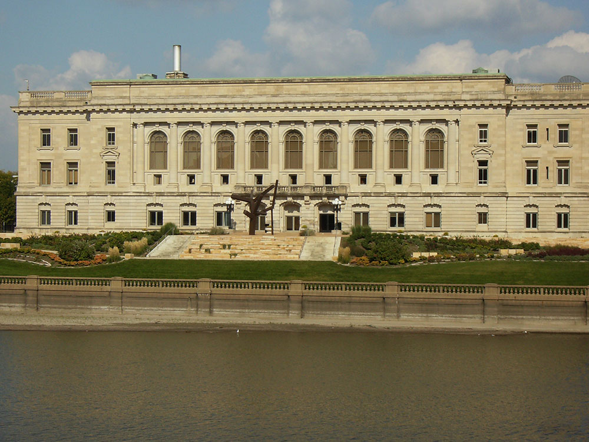

Des Moines, IA Travel Guide
Capital and the most populous city in Iowa
Places to See in Des Moines

Des Moines Guy, CC BY-SA 3.0, via Wikimedia Commons; Image Size Adjusted

Copper Creek Lake Park
Urban green space featuring a 40-acre lake, paved trails, picnic shelters, and scenic wildlife viewing.
Des Moines Guy, CC BY-SA 3.0, via Wikimedia Commons; Image Size Adjusted
Des Moines Art Center
Art museum with an extensive collection of paintings, sculpture, modern art and mixed media
Des Moines Guy, CC BY-SA 3.0, via Wikimedia Commons; Image Size Adjusted
Des Moines Riverwalk
Scenic urban trail system featuring paved walkways, public art, riverfront views, and access to parks and bridges.
Des Moines Guy, CC BY-SA 3.0, via Wikimedia Commons; Image Size Adjusted
Des Moines Water Works Park
Expansive riverside park offering trails, picnic areas, concerts, and natural woodlands across 1,500 acres.
Des Moines Guy, CC BY-SA 3.0, via Wikimedia Commons; Image Size Adjusted
Easter Lake Park
Lakeside recreation area offering trails, fishing piers, playgrounds, and a beach with seasonal amenities.
Des Moines Guy, CC BY-SA 3.0, via Wikimedia Commons; Image Size Adjusted
Gray’s Lake Park
Popular urban park featuring a 1.9-mile lighted trail around a lake, with beach access, boat rentals, and skyline views.
Des Moines Guy, CC BY-SA 3.0, via Wikimedia Commons; Image Size Adjusted
Greater Des Moines Botanical Garden
Twelve-acre urban garden showcasing tropical and temperate plant collections, seasonal exhibits, and educational programs.

Danksergeant15, CC BY-SA 4.0, via Wikimedia Commons; Image Size Adjusted

Iowa State Capitol
Seat of the Iowa General Assembly set atop a hill and offers a panoramic view of the city's downtown and the West Capitol Terrace
Des Moines Guy, CC BY-SA 3.0, via Wikimedia Commons; Image Size Adjusted
Living History Farms
Interactive outdoor museum showcasing 300 years of Midwestern agricultural and rural life through immersive exhibits and live demonstrations.

Dsmspence, CC BY-SA 3.0, via Wikimedia Commons; Image Size Adjusted

Pappajohn Sculpture Park
4.4-acre park containing works by artists such as Louise Bourgeois, Jaume Plensa, Ai Weiwei, and Barry Flanagan
Overview
Des Moines is the capital and largest city of Iowa, in the center of the state at the confluence of the Des Moines and Raccoon Rivers. It is famous for hosting the Iowa Caucuses, the first contest of the presidential nominating process, for the Iowa State Fair each August, and as one of the largest insurance and financial centers in the country, with companies such as Principal and Wells Fargo. It is also known for the gold-domed Iowa State Capitol, one of the most beautiful in the country, and for a lively downtown with some of the best public art in the Midwest.
Visitors come to Des Moines for the Iowa State Capitol, for the Pappajohn Sculpture Park and the Des Moines Art Center, and for the Greater Des Moines Botanical Garden. They also come for the State Fair, the Saturday Downtown Farmers' Market, the Drake Relays, and a restaurant scene in the East Village and the Court Avenue district. The city is affordable, clean, and easy to navigate, with a skywalk system that connects downtown buildings.
History
Fort Des Moines was established in 1843 at the confluence of the two rivers to keep peace between the Sauk and Meskwaki and the settlers, and the town of Fort Des Moines was platted in 1846. The capital moved from Iowa City to Des Moines in 1857, and the city grew with the arrival of the railroads and the coal mining industry in the late nineteenth century. In the twentieth century Des Moines became a center for insurance, publishing (Meredith and the Des Moines Register), and farm-related business, and the city has been a major stop for presidential candidates since the 1970s. Its downtown has seen major redevelopment in recent decades, including the Western Gateway and East Village districts.
Sightseeing and Popular Landmarks
The Iowa State Capitol, completed in 1886, has a 23-karat gold-leaf dome and is open for free tours, and Terrace Hill, a Second Empire mansion, is the governor's residence and open for tours. The Des Moines Riverwalk links downtown with the East Village, and Pappajohn Sculpture Park has works by artists such as Jaume Plensa and Louise Bourgeois. Nearby, Salisbury House is a Tudor-style mansion, and Living History Farms in Urbandale is an outdoor museum of Iowa farm history.
Culture and Museums
The Des Moines Art Center, with buildings by Eliel Saarinen, I. M. Pei, and Richard Meier, has a collection of modern art with free admission, and the World Food Prize Hall of Laureates honors people who have improved the world's food supply. The Science Center of Iowa, and the State Historical Museum of Iowa are other museums, and the Des Moines Performing Arts and the Des Moines Symphony offer performances. The Iowa State Fair, held each August, features a butter cow sculpture and a wide variety of food on a stick.
Parks
Des Moines has a large park system, including Water Works Park, one of the largest urban parks in the country, and Gray's Lake Park, with a trail and a footbridge. Easter Lake Park and Copper Creek Lake Park offer fishing and trails, and the Botanical Garden, in a geodesic dome, has tropical plants year-round. The High Trestle Trail, a 25-mile paved trail with a spectacular bridge, starts near the city, and the Raccoon River Valley Trail is another popular route.
Seasons and Weather
Des Moines has a humid continental climate with four distinct seasons. Summers are hot and humid, with highs in the 80s°F, and winters are cold, with highs in the 20s and 30s°F and about 35 inches of snow. Spring and fall are mild and pleasant, and thunderstorms are common in spring and summer. The State Fair in August is the busiest time of the year.
This article uses material from Wikipedia as well as information from official tourism and institutional sources. Key references include Catch Des Moines, Iowa State Capitol, Des Moines Art Center, Iowa State Fair, and National Weather Service Des Moines. Wikipedia material is from the article "Des Moines, Iowa", and is available under the Creative Commons Attribution-Share-Alike License 3.0.
-1000.jpg)
.jpg){kind=link}
